Customize diagrams: Add additional elements
- TODO
- Install required packages
- Identify coordinates in scatterplots
- Add elements to arbitrary device regions
- Points and lines
- Rectangles, polygons, and text
- Function curves and mathematical symbols
- Custom axes, custom grid, and plot legend
- Error bars
- Raster images
- Detach (automatically) loaded packages (if possible)
- Get the article source from GitHub
TODO
- link to diagDevice for regions, diagFormat, diagScatter
Install required packages
wants <- c("Hmisc", "mvtnorm", "plotrix")
has <- wants %in% rownames(installed.packages())
if(any(!has)) install.packages(wants[!has])Identify coordinates in scatterplots
To later add elements to the plot
vec <- rnorm(10)
plot(vec, pch=16)
(xy <- locator(n=3))$x
[1] 4.952304 7.076921 2.068896
$y
[1] 0.09391669 -0.13407651 -0.88645406Add elements to arbitrary device regions
Each device has its own coordinate system.
library(Hmisc)
set.seed(123)
par(xpd=NA, mar=c(5, 5, 5, 5))
plot(rnorm(10), xlab=NA, ylab=NA, pch=20)
pt1 <- cnvrt.coords(0, 0, input="fig")
pt1$usr$x
[1] -1.304
$y
[1] -2.027974points(pt1$usr$x + 0.5, pt1$usr$y + 0.3, pch=4, lwd=5, cex=5, col="darkgray")
text(pt1$usr$x + 1, pt1$usr$y + 0.24, adj=c(0, 0),
labels="cross lower-left figure-region", cex=1.5)
pt2 <- cnvrt.coords(c(0.05, 0.95), c(0.95, 0.05), input="tdev")
pt2$usr$x
[1] -0.6236 11.6236
$y
[1] 2.252680 -1.802676arrows(x0=pt2$usr$x[1], y0=pt2$usr$y[1],
x1=pt2$usr$x[2], y1=pt2$usr$y[2], lwd=4, code=3,
angle=90, lend=2, col="darkgray")
text(pt2$usr$x[1] + 0.5, pt2$usr$y[1], adj=c(0, 0),
labels="arrow across total device-region", cex=1.5)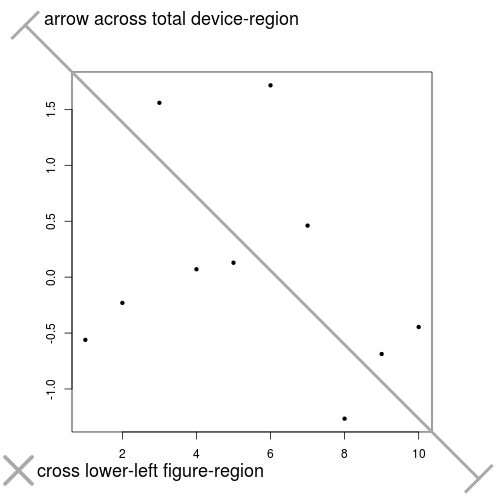
Points and lines
Points and lines
xA <- seq(-15, 15, length.out=200)
yA <- sin(xA) / xA ## sinc function
plot(xA, yA, type="l", xlab="x", ylab="sinc(x)",
main="Add points and lines", lwd=2)
abline(h=0, col="darkgreen", lwd=2)
idx <- round(seq(1, length(xA), length.out=30))
points(xA[idx], yA[idx], col="red", pch=16, cex=1.5)
yB <- sin(pi * xA) / (pi * xA) ## normalized sinc function
lines(xA, yB, col="blue", type="l", lwd=2)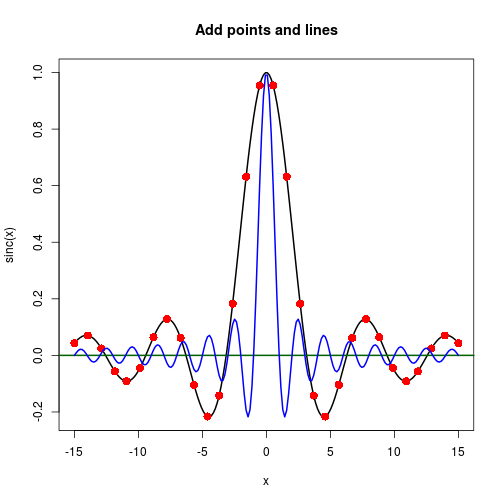
Gridlines, line segments, and arrows
X <- rnorm(20, 175, 7)
Y <- 0.5*X + 10 + rnorm(20, 0, 4)
fit <- lm(Y ~ X)
pred <- fitted(fit)
par(lend=2)
plot(Y ~ X, asp=1, type="n", main="Add grid, line segments and arrows")
abline(fit, lwd=2)
grid(lwd=2, col="gray")
segments(x0=X, y0=pred, x1=X, y1=Y, lwd=2, col="darkgray")
arrows(x0=c(X[1]-6, X[3]),
y0=c(Y[1], Y[3]+6),
x1=c(X[1]-0.5, X[3]),
y1=c(Y[1], Y[3]+0.5),
col="red", lwd=2)
arrows(x0=X[4]+0.1*(X[7]-X[4]),
y0=Y[4]+0.1*(Y[7]-Y[4]),
x1=X[4]+0.9*(X[7]-X[4]),
y1=Y[4]+0.9*(Y[7]-Y[4]), code=3, col="red", lwd=2)
points(Y ~ X, pch=16, cex=1.5, col="blue")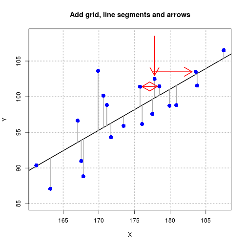
Rectangles, polygons, and text
Rectangles and text
n <- 7
len <- 1/n
colsR <- rep(seq(0.9, 0.2, length.out=n), each=n)
colsG <- rep(seq(0.9, 0.2, length.out=n), times=n)
cols <- rgb(colsR, colsG, 0)
xLeft <- rep(seq(0, 1-len, by=len), times=n)
yBot <- rep(seq(0, 1-len, by=len), each=n)
xRight <- rep(seq(len, 1, by=len), times=n)
yTop <- rep(seq(len, 1, by=len), each=n)
plot(c(0, 1), c(0, 1), axes=FALSE, xlab=NA, ylab=NA, type="n",
asp=1, main="Color ramp")
rect(xLeft, yBot, xRight, yTop, border=NA, col=cols)
idx <- c(10, 27)
xText <- xLeft[idx] + (xRight[idx]-xLeft[idx])/2
yText <- yBot[idx] + (yTop[idx] - yBot[idx])/2
text(xText, yText, labels=cols[idx])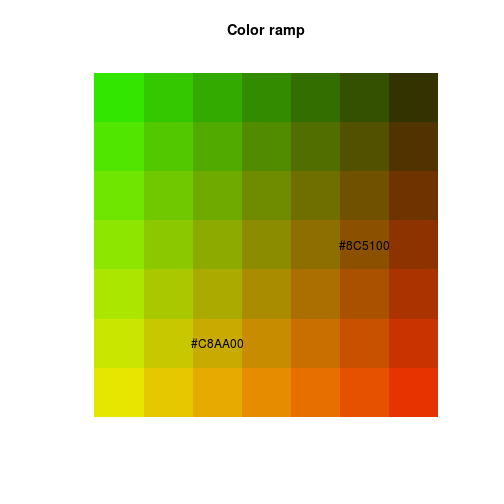
Polygons, mathematical symbols, and custom axes
Filled polygon
mu <- 0
sigma <- 3
xLims <- c(mu-4*sigma, mu+4*sigma)
X <- seq(xLims[1], xLims[2], length.out=100)
Y <- dnorm(X, mu, sigma)
selX <- seq(mu-sigma, mu+sigma, length.out=100)
selY <- dnorm(selX, mu, sigma)
cdf <- pnorm(X, mu, sigma)
par(mar=c(5, 4, 4, 5), cex.lab=1.4)
plot(X, Y, type="n", xlim=xLims-c(-2, 2), xlab=NA, ylab=NA,
main="Normal PDF and CDF N(0, 3)")
box(which="plot", col="gray", lwd=2)
polygon(c(selX, rev(selX)), c(selY, rep(-1, length(selX))),
border=NA, col="lightgray")
lines(X, Y, lwd=2)
par(new=TRUE)
plot(X, cdf, xlim=xLims-c(-2, 2), type="l", lwd=2, col="blue", xlab="x",
ylab=NA, axes=FALSE)
axis(side=4, at=seq(0, 1, by=0.1), col="blue")
segments(x0=c(mu-sigma, mu, mu+sigma),
y0=c(-1, -1, -1),
x1=c(mu-sigma, mu, mu+sigma),
y1=c(pnorm(mu-sigma, mu, sigma), pnorm(mu, mu, sigma),
pnorm(mu+sigma, mu, sigma)),
lwd=2, col=c("darkgreen", "red", "darkgreen"), lty=2)
segments(x0=c(mu-sigma, mu, mu+sigma),
y0=c(pnorm(mu-sigma, mu, sigma), pnorm(mu, mu, sigma),
pnorm(mu+sigma, mu, sigma)),
x1=xLims[2]+10,
y1=c(pnorm(mu-sigma, mu, sigma), pnorm(mu, mu, sigma),
pnorm(mu+sigma, mu, sigma)),
lwd=2, col=c("darkgreen", "red", "darkgreen"), lty=2)
arrows(x0=c(mu-sigma+0.2, mu+sigma-0.2), y0=-0.02,
x1=c(mu-0.2, mu+0.2), y1=-0.02,
code=3, angle=90, length=0.05, lwd=2, col="darkgreen")
mtext(text="F(x)", side=4, line=3, cex=1.4)
rect(-8.5, 0.92, -5.5, 1.0, col="lightgray", border=NA)
text(-7.2, 0.9, labels="probability")
text(-7.1, 0.86, expression(of~interval~group("[", list(-sigma, sigma), "]")))
text(mu-sigma/2, 0, expression(sigma), col="darkgreen", cex=1.2)
text(mu+sigma/2, 0, expression(sigma), col="darkgreen", cex=1.2)
text(mu+0.5, 0.02, expression(mu), col="red", cex=1.2)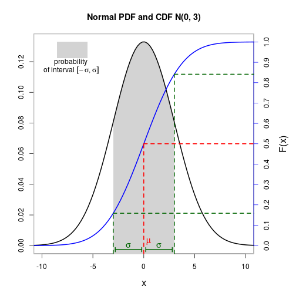
Polygon with shading lines
N <- 10
muH0 <- 0
muH1 <- 1.6
alpha <- 0.05
sigma <- 2(d <- (muH1-muH0) / sigma)[1] 0.8(delta <- (muH1-muH0) / (sigma/sqrt(N)))[1] 2.529822(tCrit <- qt(1-alpha, N-1))[1] 1.833113(powT <- 1-pt(tCrit, N-1, delta))[1] 0.7544248xLims <- c(-5, 10)tLeft <- seq(xLims[1], tCrit, length.out=100)
tRight <- seq(tCrit, xLims[2], length.out=100)
yH0r <- dt(tRight, N-1, 0)
yH1l <- dt(tLeft, N-1, delta)
yH1r <- dt(tRight, N-1, delta)curve(dt(x, N-1, 0), xlim=xLims, ylim=c(0, 0.4), lwd=2, col="red",
xlab="t", ylab="probability density",
main="t distribution under H0 und H1", xaxs="i")
curve(dt(x, N-1, delta), lwd=2, col="blue", add=TRUE)
polygon(c(tRight, rev(tRight)), c(yH0r, numeric(length(tRight))),
border=NA, col=rgb(1, 0.3, 0.3, 0.6))
polygon(c(tLeft, rev(tLeft)), c(yH1l, numeric(length(tLeft))),
border=NA, col=rgb(0.3, 0.3, 1, 0.6))
polygon(c(tRight, rev(tRight)), c(yH1r, numeric(length(tRight))),
border=NA, density=5, lty=2, lwd=2, angle=45, col="darkgray")
abline(v=tCrit, lty=1, lwd=3, col="red")
text(tCrit+0.2, 0.4, adj=0, labels="critical value")
text(tCrit-2.5, 0.38, adj=1, labels="distribution under H0")
text(tCrit+2, 0.2, adj=0, labels="distribution under H1")
text(tCrit+1.0, 0.08, adj=0, labels="power")
text(tCrit-0.7, 0.05, expression(beta))
text(tCrit+0.5, 0.015, expression(alpha))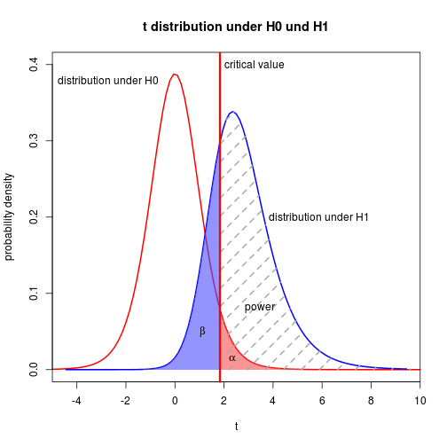
As opposed to polygon(), function polypath() can draw polygons with holes.
Function curves and mathematical symbols
mu <- 0
sigma <- 2
curve(dnorm(x, mean=1, sd=1), from=-7, to=7, col="blue", lwd=2, cex.lab=1.4)
curve((1/(sigma*sqrt(2*pi))) * exp(-0.5*(((x-mu)/sigma)^2)), add=TRUE, lwd=2, lty=2)
title(main="Two normal PDF curves", sub="sub-title")
legend(x="topleft", legend=c("N(1, 1)", "N(0, 2)"), col=c("blue", "black"),
lty=c(1, 2))
text(x=3.6, y=0.35, labels="normal distribution\nN(1, 1)")
text(x=-3.5, y=0.1 , labels="N(0, 2)")
mtext(text="Probability density", side=3)
text(-4, 0.3, expression(frac(1, sigma*sqrt(2*pi))~exp*bgroup("(", -frac(1, 2)~bgroup("(", frac(x-mu, sigma), ")")^2, ")")))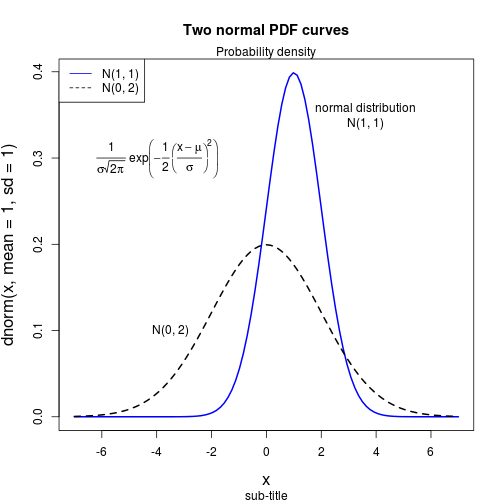
See ?plotmath and demo(plotmath) for explanations and further demos for mathematical expressions.
Custom axes, custom grid, and plot legend
vec <- seq(from=-2*pi, to=2*pi, length.out=200)
mat <- cbind(sin(vec), cos(vec))
pts <- tan(vec)
pts <- ifelse(abs(pts) > 2, NA, pts)
idx <- round(seq(0, length(vec), length.out=100))
matplot(vec, mat, ylim=c(-2, 2), lwd=2, col=c(12, 14),
type="l", lty=1, xaxt="n", xlab=NA, ylab=NA,
main="Trigonometric functions")
points(vec[idx], pts[idx], pch=16, cex=1.5, col=17)
xTicks <- seq(from=-2*pi, to=2*pi, by=pi/2)
xLabels <- c("-2*pi", "-3*pi/2", "-pi", "-pi/2", "0", "pi/2", "pi", "3*pi/2", "2*pi")
axis(side=1, at=xTicks, labels=xLabels)
abline(h=c(-1, 0, 1), v=seq(from=-3*pi/2, to=3*pi/2, by=pi/2), col="gray", lty=3, lwd=2)
abline(h=0, v=0, lwd=2)
legend(x="bottomleft", legend=c("sin(x)", "cos(x)", "tan(x)"), cex=1.3,
lty=c(1, 1, NA), pch=c(NA, NA, 16), col=c(12, 14, 17), bg="white")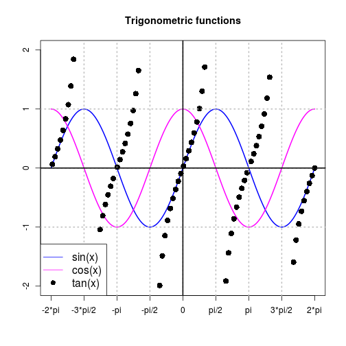
Error bars
Simulate data
Nj <- c(15, 20, 18, 22)
P <- length(Nj)
DV <- rnorm(sum(Nj), rep(c(30, 20, 25, 15), Nj), 8)
IV <- factor(rep(1:P, Nj))
Mj <- tapply(DV, IV, FUN=mean)
Sj <- tapply(DV, IV, FUN=sd)
ciWidths <- qt(0.975, df=Nj-1) * Sj / sqrt(Nj)Using plotCI() from package plotrix
library(plotrix)
stripchart(DV ~ IV, method="jitter", xlab="Group",
main="Data und confidence intervals", xaxt="n",
col="darkgray", ylim=c(0, 40), pch=16, vert=TRUE)
plotCI(x=Mj, uiw=ciWidths, sfrac=0, col="blue",
cex=2, lwd=3, pch=16, add=TRUE)
axis(side=1, at=1:P, labels=LETTERS[1:P])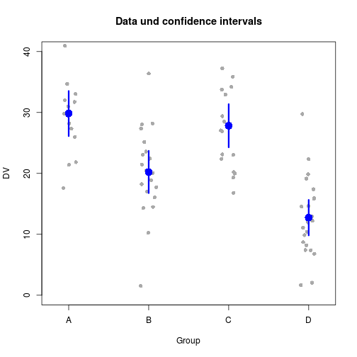
Means and error bars in a two-way design
Mj1 <- c(2, 3, 6, 3, 5)
Sj1 <- c(1.7, 1.8, 1.7, 1.9, 1.8)
Mj2 <- c(4, 3, 2, 1, 3)
Sj2 <- c(1.4, 1.7, 1.7, 1.3, 1.5)
Q <- length(Mj1)xOff <- 0.1
plotCI(y=c(Mj1, Mj2), x=c((1:Q)-xOff, (1:Q)+xOff), uiw=c(Sj1, Sj2),
xlab="Factor A", ylab="Means", ylim=c(0, 8),
main="Means and SDs in a 5x2 Design", pch=20, cex=2, lwd=2,
col=rep(c("blue", "red"), each=5), lty=rep(1:2, each=Q))
legend(x="topleft", legend=c("B-1", "B-2"), pch=c(19, 19),
col=c("blue", "red"))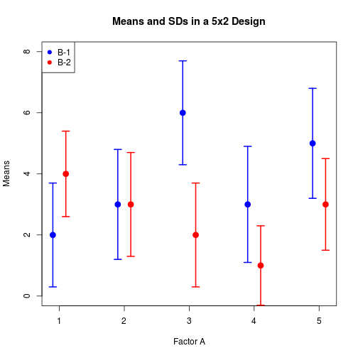
Using arrows()
barsX <- barplot(height=Mj, ylim=c(0, 40), xaxt="n", xlab="Group",
ylab="Means", main="Means and confidence intervals")
axis(side=1, at=barsX, labels=LETTERS[1:P])
limHi <- Mj + ciWidths
limLo <- Mj - ciWidths
arrows(x0=barsX, y0=limLo, x1=barsX, y1=limHi, code=3, angle=90,
length=0.1, col="blue", lwd=2)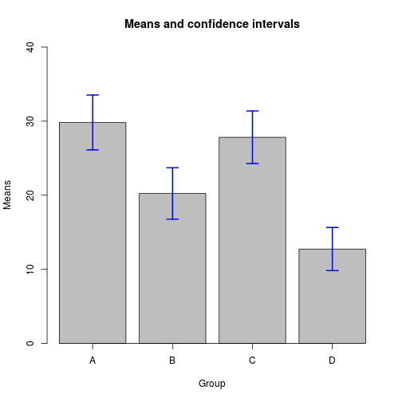
Raster images
See packages EBImage or adimpro to read in image files of various formats.
2-D color ramp square pattern
pxSq <- 6
colsR <- rep(0.4, pxSq^2)
colsG <- rep(seq(0, 1, length.out=pxSq), times=pxSq)
colsB <- rep(seq(0, 1, length.out=pxSq), each=pxSq)
arrSq <- array(c(colsR, colsG, colsB), c(pxSq, pxSq, 3))
sqIm <- as.raster(arrSq)Gabor patch: oriented 2-D cosine with contrast following a 2-D normal distribution
pxG <- 500
alpha <- 0.4
beta <- min(1-alpha, 1+alpha)
freq <- 3
vals <- rep(seq(-2*pi, 2*pi, length.out=pxG), pxG)
x <- matrix(vals, nrow=pxG, byrow=TRUE)
y <- matrix(vals, nrow=pxG, byrow=FALSE)
phi <- alpha*x + beta*y
cosMat <- 0.5*cos(freq*phi) + 0.5library(mvtnorm)
mu <- c(0, 0)
sigma <- diag(2)*9
gaussVal <- dmvnorm(cbind(c(x), c(y)), mu, sigma)
gaussMat <- matrix(gaussVal, nrow=pxG) / max(gaussVal)
gabIm <- as.raster(cosMat*gaussMat)plot(c(0, 1), c(0, 1), type="n", main="Bitmaps", xlab="", ylab="", asp=1)
rasterImage(sqIm, 0, 0, 0.4, 0.4, angle=0, interpolate=FALSE)
rasterImage(gabIm, 0.5, 0.3, 1.1, 0.9, angle=10, interpolate=TRUE)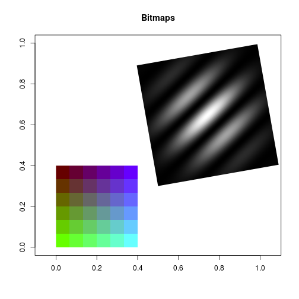
Detach (automatically) loaded packages (if possible)
try(detach(package:Hmisc))
try(detach(package:survival))
try(detach(package:splines))
try(detach(package:mvtnorm))
try(detach(package:plotrix))Get the article source from GitHub
R markdown - markdown - R code - all posts